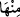
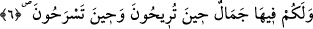

vermek gibi “birçok faydalar vardır.”
“
ed-Dif ’”, şiddetli soğuğun zıddı şiddetli sıcaklık anlamındadır. Sonradan
kendisiyle soğuktan korunulan koyun ve keçi yünüyle deve tüyünden elde edilmiş her
türlü giyecek için kullanılan bir isim olmuştur. Hangi sınıftan olursa olsun hayvanların
derileri de tabaklandıktan sonra kullanılabilir. İmam Şâfiî (r.h.), yırtıcı hayvanların
derilerinden yapılmış şeyleri giymeyi mekruh saymıştır. Rasûlullah (s.a.)’in
bayramlarda giydiği tilki derisinden yapılmış bir cübbesi vardı. Tilki derisi, el-
Kâmûs’ta da belirtildiği gibi en güzel, en kıymetli ve her mizaçta insanın giyebileceği
en uygun deridir.
Isınma vâsıtaları herkes için zarûrî bir ihtiyaç olduğu halde Hz. Peygamber (s.a.)’in
ateşle ısınmadığı meşhûrdur. Yine havastan bazı kimselerin bu şekilde, kalblerinin
sıcaklığıyla yetinip zâhirî bir sıcaklığa ihtiyaç duymadıkları söylenir.
Sâib der ki:
Bir topluluk ki ezel aşkı ile arkası sıcak değildir
Samurun nazını sincabın minnetini çekerler
“Onlardan bir kısmını” yâni etleri ve yağları gibi yenilebilen kısımlarını “da
yersiniz.” Kan, kemik, omurga iliği, mesâne, öd kesesi, haya, tenâsül uzuvları ve
birtakım bezelerinin yenmesi ise haramdır.
Âyette “
minhâ”nın öne alınması, fâsılaya riâyet etmek içindir. Ya da burada
sayılan hayvanların insan hayâtının devâmını sağlayan, beslenme açısından aslî unsurlar
olduğunu, kuşlar ve diğer av hayvanlarının ise bazen tedâvî maksadıyla bazen da
eğlence ve damak zevki kabilinden yendiğini ifâde içindir. O zaman bu ifâdedeki
‘onlardan yersiniz’ şeklindeki sınırlama, âyette zikredilen hayvanlarla diğer hayvanlar
arasında nisbî bir sınırlamadır. Böylece ekmek ve benzeri çok kullanılan gıdâların
bulunuşu buna ters düşmez.
6. Ayrıca sizin için onlarda akşamleyin getirirken, sabahleyin salıverirken bir
güzellik (bir zevk) vardır.
“Ayrıca sizin için onlarda” hayvanların, sizin zarûrî ihtiyaçlarınızı karşılayan,
yukarıda sayılan bu faydalarının yanı sıra “akşamleyin getirirken, sabahleyin
salıverirken” akşamları otlaklarından döndürürken ve sabahları ağıllarından
salıverirken “bir güzellik” ayrı bir zevk ve insanlar nazarında bir üstünlük ve şöhret
vesîlesi olma durumu da “vardır.”
Âyette bu iki vaktin özellikle belirtilmesinin sebebi şudur: Çobanlar, bu hayvanları
sâbahleyin götürürken ve akşamleyin geri getirirken birbirine karışan çeşitli hayvan
sesleriyle avlular şenlenir. Bu manzarayı seyredenler nazarında mal sâhibinin değeri ve